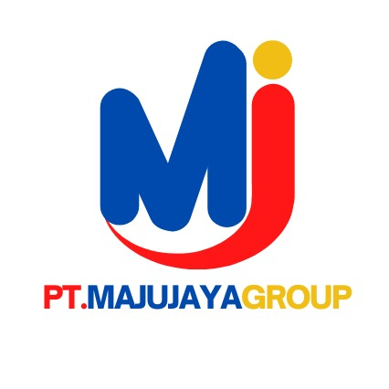
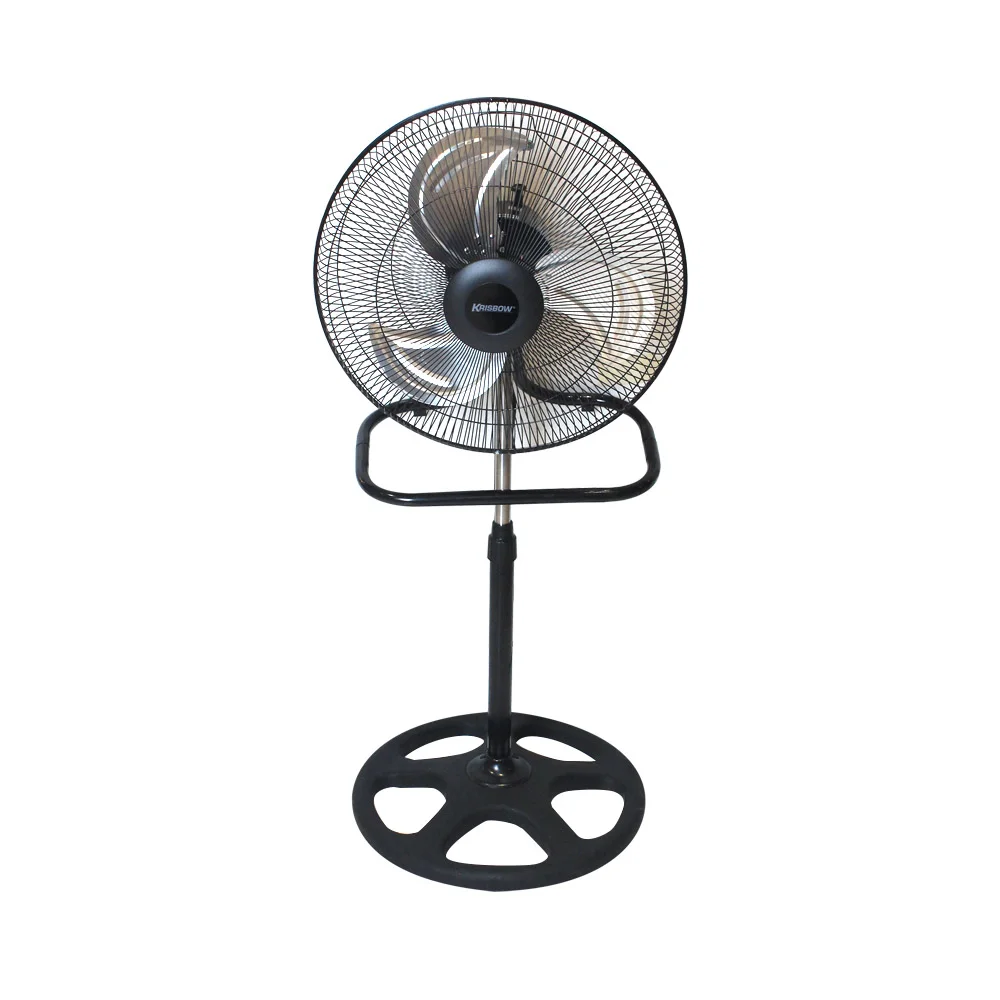
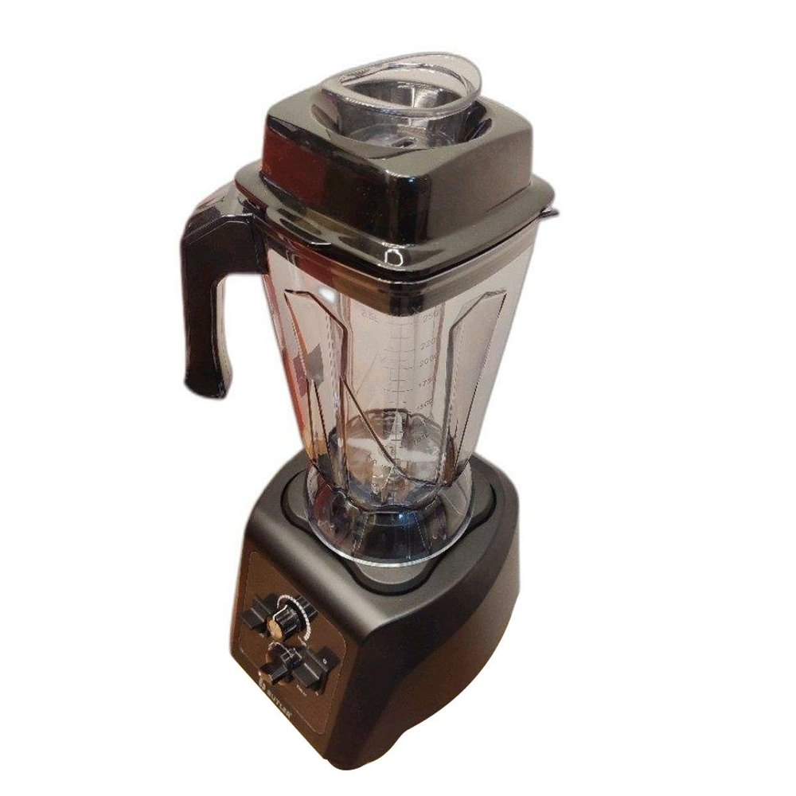

PT. Maju Jaya
Home | Produk | Pemesanan
Sejarah Perusahaan
PT Maju Jaya didirikan pada tahun 2000 sebagai perusahaan manufaktur yang berfokus pada produksi alat-alat rumah tangga berkualitas tinggi. Berawal dari sebuah pabrik kecil di Jakarta, perusahaan mulai memproduksi peralatan rumah tangga sederhana seperti panci, wajan, dan peralatan dapur lainnya. Dengan komitmen terhadap kualitas dan inovasi, PT Maju Jaya terus berkembang pesat.
Pada tahun 2005, perusahaan memperluas lini produksinya dengan menambahkan peralatan elektronik rumah tangga, seperti blender, rice cooker, dan kipas angin. Langkah ini memperkuat posisi PT Maju Jaya sebagai salah satu produsen alat rumah tangga terkemuka di Indonesia.
Seiring meningkatnya permintaan pasar, PT Maju Jaya membangun pabrik baru di kawasan industri Bekasi pada tahun 2012, dilengkapi dengan teknologi manufaktur modern untuk meningkatkan efisiensi produksi dan kualitas produk.
Perusahaan juga mulai mengekspor produknya ke negara-negara di Asia Tenggara, menandai langkah penting dalam ekspansi internasional.
Pada tahun 2020, PT Maju Jaya berkomitmen untuk menghadirkan produk yang lebih ramah lingkungan dengan menggunakan bahan-bahan berkualitas tinggi dan proses produksi yang lebih efisien. Inovasi terbaru dalam desain dan teknologi terus dikembangkan untuk memenuhi kebutuhan rumah tangga modern.
Kini, PT Maju Jaya telah menjadi salah satu pemimpin di industri manufaktur alat rumah tangga di Indonesia, dengan jaringan distribusi luas dan produk yang dipercaya oleh jutaan pelanggan. Dengan visi untuk terus berkembang dan menghadirkan solusi terbaik bagi masyarakat, PT Maju Jaya berkomitmen untuk terus berinovasi dan memberikan kualitas terbaik dalam setiap produknya.
Visi
- Menjadi perusahaan konstruksi terdepan di Indonesia
- Memberikan kualitas terbaik dalam setiap proyek
Misi
- Membangun proyek dengan standar tinggi
- Mengutamakan kepuasan pelanggan
- Berkomitmen menjaga kelestarian lingkungan
Produk Unggulan
|  |
 |
 |
Kipas Angin
Kipas Angin menduduki posisi pertama peralatan elektronik rumah tangga terfavorit dan sudah terjual lebih dari 1,5 juta per bulan. |
Rice Cooker
Rice Cooker menduduki posisi kedua setelah kipas angin sebagai peralatan elektronik rumah tangga terfavorit dan sudah terjual lebih dari lebih dari 1 juta per bulan.
|
Blender
Dan yang terakhir, Blender menduduki posisi ketiga peralatan elektronik rumah tangga terfavorit dan sudah terjual lebih dari 900 ribu per bulan. |